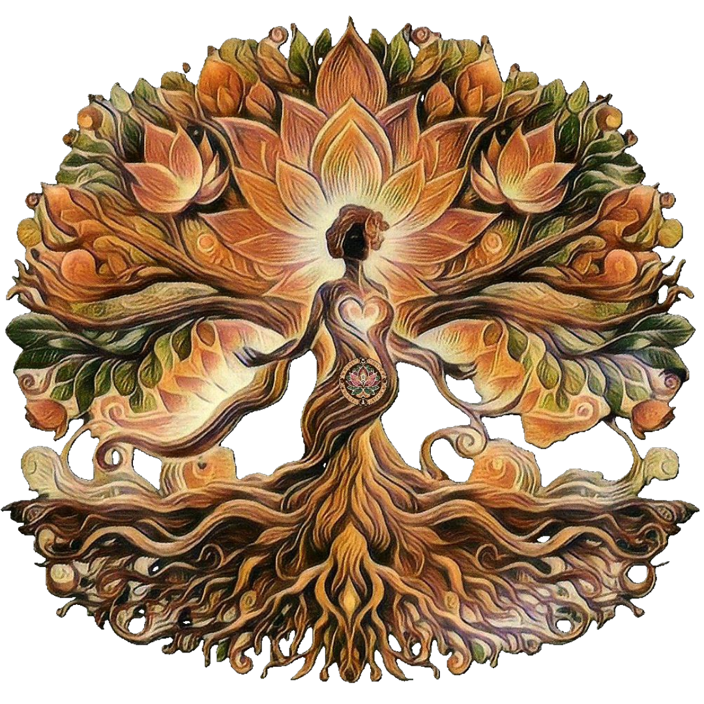

Verena Eichner (*1981)
Sozialpädagogin / Bildungs- & Erziehungswissenschaften
Ganzheitliche Gesundheitsberaterin – im Einklang mit Yoga & Ayurveda
(Ausbildung: Ayurveda-Yoga-Center Freiburg)
Thai Yoga Massage Practitioner
(Ausbildung: Yoga Akademie Freiburg)
Reiki Grad I – Shoden – Öffnung des Reiki-Kanals
In Freiburg im Breisgau geboren und im schönen Oberglottertal aufgewachsen, verband ich mich sehr früh sehr tief mit der Natur des Schwarzwaldes und den energetischen Gegebenheiten in meiner Umgebung.
Im Erleben meiner eigenen Mutterschaft sowie in verschiedenen beruflichen Kontexten erkannte ich bald, dass das Begleiten von Menschen auf dem Weg zu sich selbst unverkennbar ein Teil meines Lebenszwecks darstellt.
Im uralten Wissen und der Weisheit des Ayurveda & Yoga fand ich einen wunderbaren, selbstbestimmten und eigenverantwortlichen Weg, die Rückverbindung zu meiner eigenen Gesundheit, inneren Weisheit und Ursprünglichkeit wiederzufinden und zu vertiefen.
In meinem Projektorinnen-Dasein (Human Design) entspricht es meiner natürlichen Wesenheit, mein Gegenüber in seiner/ihrer Ganzheit und vollen Kraft wahrzunehmen und zu erkennen, wie diese individuelle Kraft kanalisiert und erfolgreich eingesetzt werden kann.
Durch weitere Ausbildungen (s. o.) ließen sich schließlich mein Wissen und die Lebenserfahrungen aus Beruf und Familie, die prozessbegleitenden Fähigkeiten und hellsichtigen/feinfühligen Gaben fundiert untermauern und miteinander in Einklang bringen.
Auf ein jahrelanges Austragen in meiner ersten Lebenshälfte sollte dann zu Beginn der zweiten Lebenshälfte die Geburt meiner Vision folgen – und ich ging mit meinen Gaben nach außen.
Die Initiation zu meinem Großmutterdasein erlaubt es mir, mich mit dem großen und ungeahnt kraftvollen spirituellen Weisheitsfeld der Elterstenschaft zu verbinden, aus dieser Tiefe zu schöpfen und die Gaben in meine Arbeit einfließen zu lassen.
Seither hat sich bildlich gesprochen das Wurzelwerk meiner LebensEiche um ein Vielfaches erweitert, gestärkt und vertieft, sodass sich die Größe meiner Krone und die Tiefe meiner Wurzeln in ausgewogener Einheit verbinden.
So verwebe ich all meine Fähigkeiten, Gaben und Fertigkeiten zu einer unikaten holistischen Begleitkunst und entwickle auf individuelle und seelengeleitete Weise meine unterschiedlichen Konzepte und Angebote auf Herzhöhe.
„Menschen in ihren Wachstums- und Entfaltungsprozessen zu begleiten – selbstbestimmt, liebevoll und achtsam über sich selbst hinauszuwachsen, um im gleichen Moment weiter in sich und das eigene authentische Sein hineinzuwachsen – verstehe und erfahre ich als meinen Lebenssinn.“
Ich freue mich, wenn du mir dein Vertrauen schenkst, dich mit mir auf Herzhöhe zu verbinden und gemeinsam ein paar Schritte auf deinem Weg der Entfaltung zu gehen.
Herzlichst,
Verena
Kontakt
Bodyreading & intuitive Körperanwendung – Raum Offenburg und Freiburg
Soulreading – per Fernkontakt
Verena Eichner
holistische Begleitkunst
© 2024 Verena Eichner | Alle Rechte vorbehalten